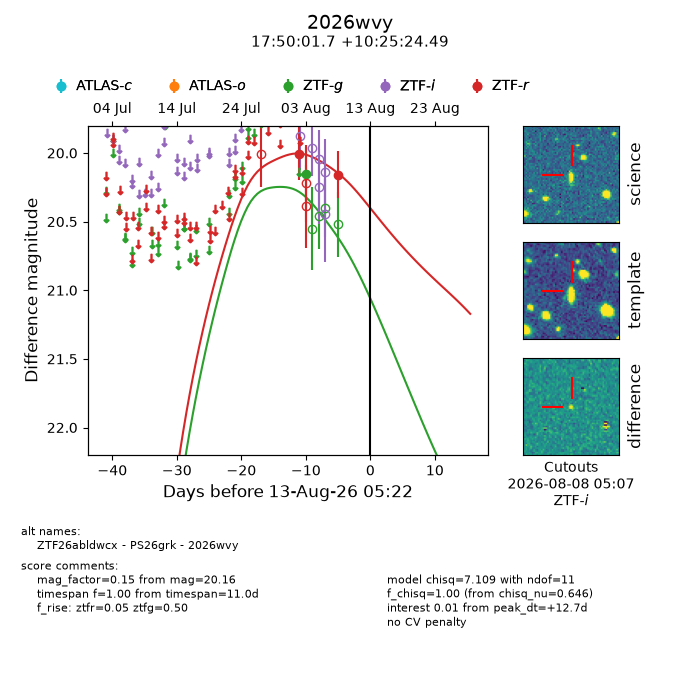
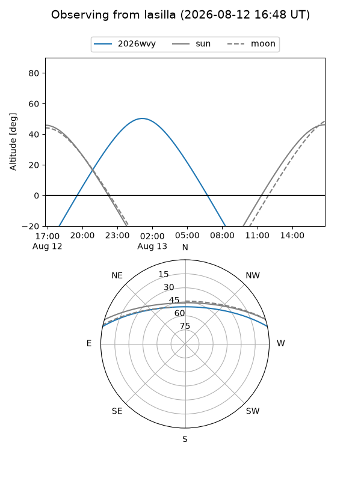
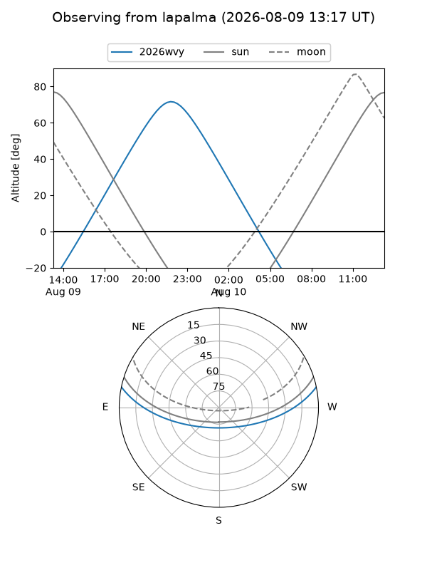
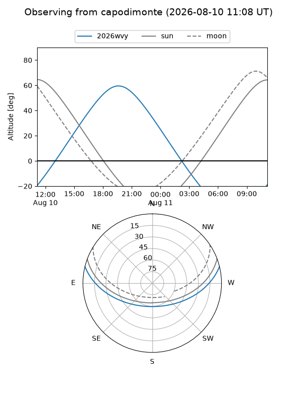
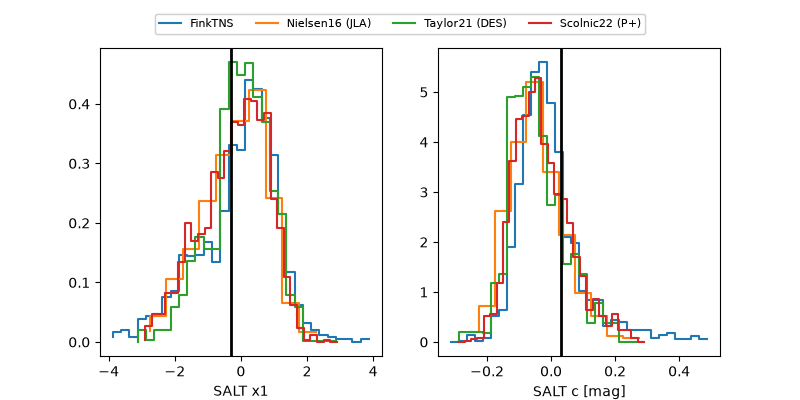

2026wvy
Target 2026wvy at 2026-08-13 05:25
Aliases and brokers:
FINK-ZTF: ztf.fink-portal.org/ZTF26abldwcx
Lasair-ZTF: lasair-ztf.lsst.ac.uk/objects/ZTF26abldwcx
ALeRCE-ZTF: alerce.online/object/ZTF26abldwcx
YSE-PZ: ziggy.ucolick.org/yse/transient_detail/2026wvy
TNS name: wis-tns.org/object/2026wvy
Direct TNS query: direct search
alt names
ZTF26abldwcx (ztf,fink_ztf)
2026wvy (tns,yse)
PS26grk (panstarrs)
Coordinates:
equatorial (ra, dec) = 267.5072,+10.42347
equatorial (HMS+DMS) = 17:50:01.74,+10:25:24.49
galactic (l, b) = (35.4850,+18.31467)
Flags:
TNS type: nan
peak dt: +12.7
Photometry:
last ztfg=20.15, ztfr=20.16
1 ztfg, 2 ztfr detections
Lightcurve

Visibility



Additional plots
